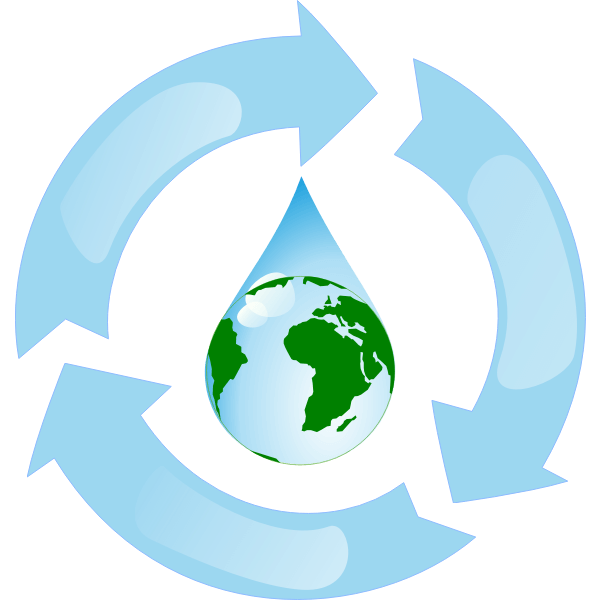

How to Reuse your Hydroponic Wastewater
If you’re really against reusing it, jump to How to Dispose of your Hydroponic
Wastewater
There are many things can you can do to upgrade your hydroponic system. Recycling water
is just one of those ways. It
can reduce your water usage, reduce your nutrient usage and save you some money!
Plants grown hydroponically already have insane water conservation compared to
traditional agriculture, up to 90% less.
This is due to reduced evaporation in hydroponic systems and near-perfect irrigation from water constantly
touching the
plant's roots.
Don't forget the first step to being able to recycle your water is having clean water
to start. Start your system with
the purest water possible, preferably distilled or reverse osmosis water, but tap will do. Once in your system,
control
the Ph and EC of your system to maintain “healthy” water.
Our beginner's guide will take you through the simple process of reusing your water. It
will cost you some money and
take you some time. There are three main ways to recycle your water and a couple of alternative methods. Let's
take a
look!
Why you Should Clean and Reuse your Water
There are so many benefits of hydroponics, but the biggest negative that I’ve ever seen is the
excessive amounts of
wastewater produced from your system. In systems that don't reuse water, half of the water put into the system
is taken
out as wastewater. It takes a ton of time to dump out your water, clean the reservoir, fill it with new water,
add
nutrients, and balance the pH.
Hydroponic wastewater is something to be careful with. Wastewater contains nutrients
like nitrogen, phosphorus, sulfur,
zinc, and calcium. While effective in supporting plant growth, these nutrients are not great to put down the
drain.
Therefore, many cities, counties, and towns have rules for dumping fertilized wastewater. There are hefty fines
involved
if you mishandle your wastewater. You probably won't get caught, but it’s still the right thing to do.
Willem van AkenLicense
If dumped down the drain, high nitrogen and phosphorous levels from fertilizers found
in hydroponic wastewater can be
harmful. Once dumped down the drain, hydroponic wastewater can enter the environment. Once in the environment,
wastewater can promote the growth of large amounts of algae, potentially causing algae blooms. Algae blooms are
very
harmful to the environment. Algae blooms can:
- Produce toxins in the water that can hurt or even kill plants, animals, and fish nearby. Humans can also become sick.
- Create areas of low oxygen. By covering the entire surface of a body of water with algae, light and oxygen cannot enter the water. This creates a “dead zone” where plants die from lack of sunlight and fish drown from no oxygen.
- Force governments and companies to spend large amounts of money to clean up bodies of water.
So it is essential to manage your hydroponic wastewater well, and reusing it is a
straightforward way to manage your
wastewater. As a bonus, recycling your hydroponic wastewater can be cost-saving in the long run.
Ways to Recycle Wastewater:
There are a slew of ways to recycle your wastewater, but below are our favoirite. They are
supported by many and have minimal downsides
Pasteurization
tetrapakLicense
-
ProsNo Need to Filter Water BeforehandNot Harmful to HumansRobust
-
ConsExpensive on Small ScaleMineral Buildup in the MachineTakes up a lot of Space
Pasteurization is used all the time in our world. It cleans our milk, juice, eggs, beer, canned
food, and syrup. It
kills bacteria (good and bad alike) usually present in those liquids and allows for long-term storage.
Pasteurization is used in hydroponics to kill bacteria, so you can keep reusing that
water. The process works by rapidly
heating the liquid with heat exchangers designed to swap heat between 2 substances quickly. The hot fluid is
held above
203 degrees Fahrenheit for 30 seconds. Then the process goes reverse, and the liquid is cooled rapidly back to
room
temperature. This process kills all life in the water. Filtering your water before or after using a
pasteurization
system is unnecessary. Frequent cleaning of the pasteurization system is necessary to prevent excess buildup of
minerals
in the machine.
The best way to get a pasteurization system is second-hand online. There are tons of
old milk/beer pasteurization tanks
online for cheap. They may turn out to be broken garbage, but that's the risk you have to take. If you want to
take the
safe route, you can buy a pasteurization system at a local farm supply store. Some are sold online, but it’s
expensive
to ship, and the quality is suspect.
Laghi.lLicense
Ozonation
-
ProsEasy to operateUseful for More than just HydroponicsEnvironmentally FriendlyMost Effective Sterilizer on the List
-
ConsHighly Corrosive to EquipmentDangerous if Breathed inMay Cause Issues with Iron Uptake
The first step in ozonation is to filter the water with a 50-micron filter to remove any large
contaminants. This won't
remove nutrients, most algae, and organic matter, but it will get the big stuff. Then reduce the system's pH to
4.0 to
get the best results. Finally, ozonate the system.
Ozone is an oxygen-based molecule composed of 3 oxygen atoms, it makes up the layer in
our atmosphere that blocks UV
rays from entering our planet. Ozone kills organic material by binding to it, oxidizing it with one of its
oxygen atoms,
and the other two leave as normal O2. Oxidizing the organic matter neutralizes it.
There are two major types of ozone generators: ultraviolet and corona discharge. Ozone
generators create ozone by
breaking molecules into individual atoms, then binding 3 of them back together into ozone. Then, ozone is
injected into
the water to kill living organic matter.
Ozonation is by far the most effective sterilizer on this list. It works fast and
effectively, then leaves with no
residue. It has no environmental impact and doesn't use much energy.
Ultraviolet
-
ProsHighly EffectiveChemical FreeCost-EffectiveEasy to set Up
-
ConsWater Must be FilteredOnly Works in Clear WaterHarmful to Humans if Exposed
UV disinfection uses light to clean your water. It uses Ultraviolet light. Ultraviolet has a
higher frequency and
shorter wavelength than visible light. UV disinfection works by destroying the DNA of the cell with UV rays.
Then the
cells die as they have no “brains” to live with.
There are three types of UV radiation: UV-A, UV-B, and UV-C, each defined by its
frequency and wavelength. UV
disinfection uses UV-C radiation to kill bacteria, fungi, and viruses. Two hundred fifty millijoules per cubic
centimeter is the appropriate radiation level to disinfect water.
To disinfect water, start by filtering the water with a 50-micron water filter to
remove large particles. Then disinfect
with UV. If you’re using a radiation chamber, pump the water through the radiation chamber to disinfect, if
you’re using
a submersible system, place it in water and circulate water around the UV light.
Alternatives
Use
Wastewater on Plants
If you are against reusing your wastewater traditionally, consider watering traditionally grown
plants with it. Water
down the wastewater to one part water to one part wastewater. Don't water plants directly in the ground, as you
may have
the same issues with traditionally dumping wastewater—only water plants in contained pots.
Reverse Osmosis
This method is commonly used to treat town water to increase taste and reduce hardness. It works
by forcing water
through a semipermeable membrane that leaves contaminants behind. These are great as they remove everything from
the
water, so you’re guaranteed clean water for your system. But they remove EVERYTHING, including the nutrients you
are
growing your plants with. So you do get to reuse your water, but you have to add more nutrients. Also, these
filters can
get clogged by the excess nutrients and organic matter in the hydroponic wastewater.
Andrew pmk~commonswikiLicense
Hydrogen Peroxide
This is very similar to ozonation. The H2O2 molecule does the same thing that the O3 molecule
does. However, it's not as
effective as Ozone. It does do well with killing bacteria, but if you use a large amount, you can disinfect your
wastewater with this. Additionally, using large amounts of hydrogen peroxide in your system can harm your
plants.
Marc boukLicense
Iodine
This is not recommended. Iodine can kill viruses and bacteria, so its used to clean drinking
water in a pinch. But
iodine cannot kill some horticulture viruses, so it is not super practical for hydroponic water.
Conclusion
Pick the solution that you think will work best. If you’re unsure, email us, and we will help
you:
hydroponicsathome.us@gmail.com. Reusing your wastewater is a big step toward reducing the environmental impact
of your
system and reducing the time required to manage your system.
Questions
If you have any questions involving wastewater management or your hydroponic system, reach out.
We will be more than
happy to answer your questions. hydroponicsathome.us@gmail.com